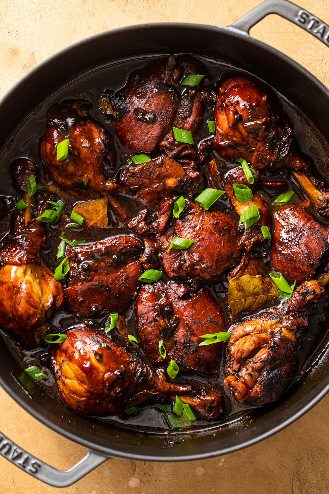

Return to Homepage
Chicken Adobo

Chicken Adobo is a type of Filipino chicken stew. Chicken pieces are marinated in soy sauce
and spices, pan-fried, and stewed until tender. The dish gained popularity because of its delicious
taste and ease in preparation.
Ingredients:
- 2 tbsp canola Oil
- 6 cloves garlic crushed
- 1 pc onion, sliced
- 2 tbsp vinegar
- 1/4 cup soy sauce
- 1 cup water
- 2 pcs bay leaves
- 1 tsp whole blackpepper, slightly crushed
- 2 pc Knorr chicken cubes
- 1 tsp brown sugar
- Optional:
Steps:
- Heat oil in pan and sauté garlic and onions. Then add chicken to the pan and sear on all sides, until you have a little browning in the chicken skin.
- Pour in vinegar, soy sauce and water. Add bay leaves, pepper and Knorr Chicken Cubes. Bring to a boil over high heat then reduce heat to simmer, but do not cover the pan. Continue to simmer for 10 mins.
- Remove chicken pieces from sauce and fry in another pan until nicely browned.
- Put back fried chicken pieces into sauce. Add sugar and let simmer again for another 10 minutes or until sauce has thickened. Serve warm.